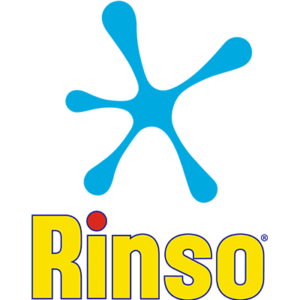
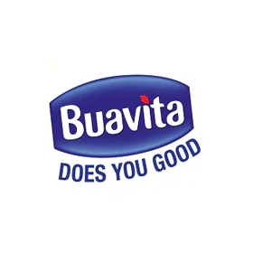
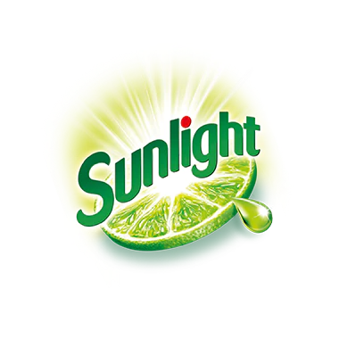
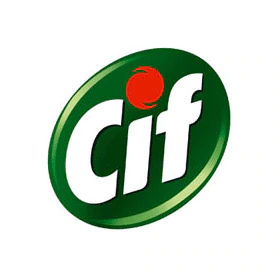
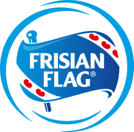

Harap Tunggu
Harap Tunggu
Hari ini, kami melakukan berbagai komitmen dan tindakan baru yang ambisius untuk mengatasi perubahan iklim, melindungi dan memperbarui alam, serta melestarikan sumber daya untuk generasi mendatang.
Di Unilever, Anda dapat membangun karir anda
Kami membuat beberapa merek paling terkenal di dunia - semuanya sedang dalam perjalanan untuk mengurangi jejak lingkungan dan meningkatkan dampak positif mereka pada masyarakat.
Merek |
Deskripsi | |
|---|---|---|
|
Rinso

|
Rinso adalah merek sabun cuci atau deterjen dari Unilever yang digunakan di Australia, Indonesia, Selandia Baru, Britania Raya dan Amerika Serikat. Merek ini awalnya diciptakan oleh Robert S. Hudson dengan merek dagang Hudson's Soap dan pada tahun 1908 dijual ke Lever Brothers dari Port Sunlight, Inggris. Rinso diluncurkan di Indonesia sebagai merek deterjen pertama di Indonesia yang menjadi nama generik untuk deterjen laundry. | |
|
Buavita

|
Buavita adalah jus yang dibuat dari buah asli, berbeda dengan minuman rasa buah yang tidak mengandung buah. Suplemen vitamin C umumnya mengandung vitamin C dalam dosis yang melebihi kebutuhan harian. Sedangkan kandungan vitamin C di Buavita sudah disesuaikan dengan kebutuhan tubuh dalam sehari. Selain itu Buavita mengandung vitamin lain seperti vitamin A, B1, B2, B3, B6 yang juga bermanfaat untuk tubuh kita. Buavita menggunakan kemasan Tetrapak dan Combibloc yang berkomitmen untuk mendaur ulang. Proses produksi Buavita memastikan kualitas Buavita selalu terjaga dan aman. Buah-buahan dipilih berdasarkan standar kualitas Buavita yang tinggi, kemudian buah diproses di PT. Ultrajaya. Konsentrat ampas / buah segar dicampur dengan bahan lain dan diolah menggunakan teknologi UHT. Kemudian sari buah Buavita dikemas secara aseptik (produk dari PT.Ultra Jaya) dan siap dipasarkan. | |
|
Sunlight

|
Sunlight adalah pembersih kuat yang membuat peralatan rumah lebih mudah dibersihkan. Selama 20 tahun, produk Sunlight berhasil menjadi merek cairan pencuci piring terbesar di Indonesia dengan berbagai aktivasi dan promosi inovasi. Sunlight telah tersedia di Indonesia selama lebih dari 25 tahun dengan format batang asli. Pada 1980-an, Sunlight diluncurkan dalam bentuk cair yang menjadikannya produk pencuci piring pertama di Indonesia. Selama 20 tahun, produk Sunlight berhasil menjadi merek cairan pencuci piring terbesar di Indonesia dengan berbagai aktivasi dan promosi inovasi. Sunlight sebagai market leader, selalu menawarkan solusi terbaik untuk membersihkan peralatan masak dan peralatan dapur dari segala jenis kotoran, bau dan minyak. Sunlight terdiri dari 3 varian yang disukai konsumennya, yaitu jeruk nipis, lemon, dan strawberry. | |
|
Cif

|
Cif adalah merek produk pembersih rumah tangga oleh Unilever, Yang dikenal sebagai Jif di Australia, Selandia Baru, Timur Tengah dan negara Nordik. Cif merupakan produk pembersih dengan penjualan terbesar abrasif di seluruh dunia. Diluncurkan untuk pertama kalinya di Prancis pada tahun 1969, Cif dihadapkan ke pasaran bubuk penggosok seperti Vim, sebagai pembersih domestik yang kuat dan berbentuk krim. Awalnya produk ini difokuskan pada pembersih krim untuk dapur dan kamar mandi, diluncurkan dengan iklannya yang menggunakan peseluncur es yang terkenal, yang menyoroti bagaimana bubuk penggosok bisa "menggaruk seperti seluncur di atas es". Pasaran di benua Asia adalah pasaran yang tumbuh paling cepat Cif, dan Indialah yang paling terbesar. | |
|
Frisian flag

|
Frisian Flag atau yang juga dikenal dengan Susu Flag adalah susu sapi yang mengandung nutrisi makro (protein, karbohidrat dan lemak) dan mengandung 8 vitamin (Vitamin A, D3, E, B1, B2, B3, B6 dan B12) dan mineral: Kalsium dan Fosfor. dapat dikonsumsi sebagai pelengkap masakan yang dipadukan dengan bahan makanan lainnya (seperti buah segar) menjadi minuman sehat atau menambah cita rasa makanan dan minuman yang nikmat. Satu porsi Susu Kental Manis Kental Manis Frisian Flag mengandung energi 140 kkal untuk menunjang asupan energi harian Anda. Dapat dikonsumsi untuk segala usia (kecuali bayi 0-12 bulan) sebagai pelengkap sajian makanan dan minuman keluarga anda. |


.jpg)